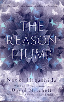

{kind=link}

I am one of many people currently reading The Reason I Jump: one boy's voice from the silence of autism by Naoki Higashida, translated by novelist David Mitchell and his wife Keiko Yoshida. It's a unique and beautiful piece of writing from a severely autistic thirteen year old who still (he's now aged sixteen) cannot reliably control his body or hold a spoken conversation.
David Mitchell
wrote an article in the Guardian explaining his personal
involvement (his son is autistic) and the book was also read on Radio
4. When I mention it to friends they say, “oh yes, I think I heard
that” or “I know the one you mean”. The hardback edition stands
at #2 in the Amazon top 100 books and is reprinting: the kindle
edition is unobtrusively available at #103. I am already thinking of
friends to whom I want to give The Reason I Jump. Not because
they are parents or teachers of autistic children but because it
speaks about the imperfect relationship between body and mind and the
importance of communication in our understanding of what it mean to
be human.
This book is
eloquent – yet Naoki Higashida's situation is that he cannot
reliably communicate. He explains how his words “flutter away”
from him; how the sounds which come out of his mouth often bear no
relation to what he is trying to express. “When there's a gap
between what I'm thinking and what I'm saying because the words that
come out of my mouth are the only ones I can access at that time.”
He knows that his voice often sounds “weird” – too loud, too
soft, bizarrely toned. “When my weird voice gets triggered , it's
almost impossible to hold it back and when I try it actually hurts,
almost as if I'm strangling my own throat.” He conveys his despair
“I used to wonder why Non-Speaking Me had ever been born.” Page
after page bring the tears prickling to my eyes.
| Illustrated by Kai and Sunny |
{kind=link}
For David Mitchell
and Keiko Yoshida, the parents of an autistic child, the discovery of
Naoki's book in its Japanese edition was life-changing. “Reading it
felt as if for the first time our own son was talking to us about
what was happening inside his head, through Naoki's words.”
I was drawn to The
Reason I Jump because my stories include imagined versions of
people who find “normal” life especially difficult – Skye
in the Strong Winds trilogy, Angel and Peter in my next (untitled)
book. I was surprised to notice how relevant some of Naoki's
explanations are to my mother's current situation as Alzheimer's makes it
harder for her to say exactly what she means. I remember what a
difference it made when I found the particular volume (Contented
Dementia by Oliver James) that helped me understand that although
mum's access to words and memories was becoming more and more
frustratingly difficult, her feelings were unaffected.
Naoki explains:
One of the biggest misunderstandings you have about us is
that our feelings aren't as subtle and complex as yours. Because how
we behave can appear so childish in your eyes, you tend to assume
that we're childish on the inside too. But of course we experience
the same emotions as you do. And, because people with autism
aren't skilful talkers, we may in fact be even more sensitive than you
are.
Alzheimer's is just one of several different words we could substitute for autism here, I think.
The Reason I
Jump is structured to offer answers to questions: “Why don't
you make eye contact when you're talking?” “Why do you make a
huge fuss over tiny mistakes? “Why do you memorise train timetables
and calendars?” “Why do you flap your fingers and hands in front
of your face?”
Here's Naoki's answer to that last one:
Flapping our
fingers and hands in front of our faces allows the light to enter our
eyes in a pleasant filtered fashion. Light that reaches us like this
feels soft and gentle, like moonlight. But 'unfiltered' direct light
sort of 'needles' its way into the eyeballs of people with autism in
sharp straight lines so we see too many points of light. This
actually makes our eyes hurt.
That said we
couldn't get by without light. Light wipes away our tears and when
we're bathed in light, we're happy. Perhaps we just love how its
particles pour down on us. Light particles somehow console us. I
admit this is something I can't quite explain using logic.
| Naoki Higashida |
{kind=link}
No, Naoki, you
can't explain it. You're a thirteen-year-old spelling out your
thoughts letter by letter, pointing at an alphabet grid that your
mother made for you. You can't give us a clearcut answer with a
uniformly-replicable solution but you can express your sensations –
memorably. You also create fairy stories and fables; you help us
understand your feelings of friendship with nature. “However often
we're ignored and pushed away by other people nature will always give
us a good big hug here inside our hearts.”
As David Mitchell
says in his introduction, you are a writer, Naoki Higashida, “an
honest, thoughtful, modest writer.”